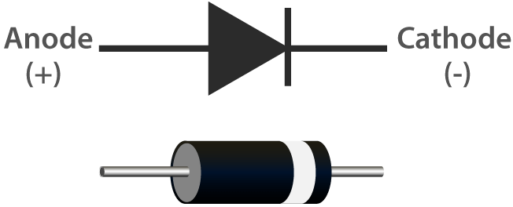

Note
Hello, welcome to the SunFounder Raspberry Pi & Arduino & ESP32 Enthusiasts Community on Facebook! Dive deeper into Raspberry Pi, Arduino, and ESP32 with fellow enthusiasts.
Why Join?
Expert Support: Solve post-sale issues and technical challenges with help from our community and team.
Learn & Share: Exchange tips and tutorials to enhance your skills.
Exclusive Previews: Get early access to new product announcements and sneak peeks.
Special Discounts: Enjoy exclusive discounts on our newest products.
Festive Promotions and Giveaways: Take part in giveaways and holiday promotions.
👉 Ready to explore and create with us? Click [here] and join today!
Diode¶

A diode is an electronic component with two electrodes. It allows current to flow in only one direction, which is often called the “Rectifying” function. Thus, a diode can be thought of as an electronic version of a check valve.
The two terminals of a diode are polarized, with the positive end called anode and the negative end called cathode. The cathode is usually made of silver or has a color band. Controlling the direction of current flow is one of the key features of diodes — the current in a diode flows from anode to cathode. The behavior of a diode is similar to the behavior of a check valve. One of the most important characteristics of a diode is the non-linear current voltage. If higher voltage is connected to the anode, then current flows from anode to cathode, and the process is known as forward bias. However, if the higher voltage is connected to the cathode, then the diode does not conduct electricity, and the process is called reverse bias.
Because of its unidirectional conductivity, the diode is used in almost all electronic circuits of some complexity. It was one of the first semiconductor devices to be created, and its applications are widespread.
However in reality diodes do not exhibit such perfect on and off directionality, but rather more complex non-linear electronic characteristics - which are determined by the specific type of diode technology.
A diode is a p-n junction formed by a p-type semiconductor and an n-type semiconductor, with a space charge layer formed on both sides at its interface and a self-built electric field, which is in electrical equilibrium when no applied voltage is present because the diffusion current due to the difference in carrier concentration between the two sides of the p-n junction and the drift current due to the self-built electric field are equal. When the forward voltage bias is generated, the mutual suppression of the external electric field and the self-built electric field increases the diffusion current of the carriers causing the forward current (that is, the reason for the conductivity). When the reverse voltage bias is generated, the external electric field and the self-built electric field are further strengthened to form a reverse saturation current I0 in a certain reverse voltage range independent of the value of the reverse bias voltage (which is the reason for non-conductivity). When the applied reverse voltage is high to a certain extent, the electric field strength in the p-n junction space charge layer reaches a critical value to produce a multiplication process of carriers, generating a large number of electron-hole pairs, resulting in a large value of the reverse breakdown current, called the diode breakdown phenomenon.
1. Forward Characteristic
When the external forward voltage is applied, in the beginning of the forward characteristic, the forward voltage is very small, not enough to overcome the blocking effect of the electric field in the p-n junction, the forward current is almost zero, this section is called the dead zone. This forward voltage that does not allow the diode to conduct is called the deadband voltage. When the forward voltage is greater than the deadband voltage, p-n junction electric field is overcome, the diode forward conduction, the current increases with the voltage and rises rapidly. In the normal use of the current range, the terminal voltage of the diode during conduction remains almost constant, this voltage is called the forward voltage of the diode.
2. Reverse Characteristic
When the applied reverse voltage, and does not exceed a certain range, the current through the diode is a few carriers drifting movement formed by the reverse current. As the reverse current is very small, the diode is in the cutoff state. This reverse current is also known as reverse saturation current or leakage current, and is greatly influenced by temperature.
3. Breakdown
When the applied reverse voltage exceeds a certain value, the reverse current will suddenly increase, a phenomenon known as electrical breakdown. The critical voltage that causes electrical breakdown is called the reverse breakdown voltage, the diode will loses its unidirectional conductivity at the time of electrical breakdown. Therefore, the use of the diode should be avoided when the applied reverse voltage is too high.
Early diodes consisted of “Cat’s Whisker” Crystals and Vacuum tubes (also called “Thermionic Valves”). Most of today’s most common diodes use semiconductor materials such as silicon or germanium.